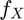
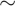
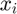
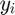
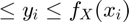
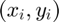

The Accept Reject Method: Anthony Gusman, Nicholas Sullivan
Contents
Introduction
The process of generating pseudo random numbers using a given cumlative density function of a random variable is easy if the inverse of the CDF is known or quick to find, the general method breaks down when there does not exist a happy way to find the inverse of the CDF. This is why we will be exploring something called the Acceptance-Rejection Method.
Overview of Method
The Acceptance-Rejection Method is actaully quite simple, the method as implemented by our acceptreject function in plain english is described below:
- Given a probability densitity function (PDF)  of a random variable X with compact support find its maximum over its range (c).
- generate a pair of random numbers (X,Y) such that X  U[support of ] and Y U[0,c]
- for each point (, ) if 0  then it is "accepted" otherwise it is "rejected"
As you can see this is essentially the same process used in Monte-Carlo integration.
The Functions
We provide two functions in this paper, acceptReject.m and acceptRejectPlot.m with the following outputs and arguments:
[X,Y] = acceptReject(f,a,b,n)
- Output: [X,Y], random numbers defined as above split into a cell with the first row as the accepted values and the second row as the rejected values
- Input: f, PDF function
- a, lower bound of f's range
- b, upper bound of f's range
- n, number of  pairs (increase this for higher accuracy)
acceptRejectPlot(fun,a,b,Xc,Yc)
- Output: plots, one of the pdf with a histogram of the accepted number generated and one of the pdf along with all accepted and rejected points.
- Input: fun, PDF function
- a, lower bound of fun's range
- b, upper bound of fun's range
- Xc, the X returned by acceptReject
- Yc, the Y returned by acceptReject
Accept Reject and Plotter function code
here is the full code of both functions with comments and syntax high lighting: acceptReject.m
function [Xc,Yc] = acceptReject(fun,a,b,n) % ACCEPTREJECT Simulates random variables with scaled density. % % Example: % f = @(x) 6 * x.^2 .* (1-x).^2; % [X,Y] = acceptReject(f, -1, 1, 1e4); % % This takes function f, left and right endpoints a = -1, b = 1 % with n = 1e4 trials; returns cell arrays X and Y. The first rows % X{1,:} and Y{1,:} contain the accepted x- and y-values, % respectively. The second rows X{2,:} and Y{2,:} contain the % rejected values. % Scale density function to appropriate size. I = integral(fun,a,b); f = @(x) (1/I)*fun(x); c = abs(min([-f(a),-f(b),fminbnd(@(x) -f(x),a,b)])); % locate maximum M = @(x) c + (x-x); % Initialize random variables for n trials. T = (b-a)*rand(1,n)+a; % x-value uniform distribution on S U = rand(1,n); % y-scale factor uniform distribution % Test criteria. TEST = [ U .* M(T) <= f(T) ]; % logic array (0 if reject, 1 if accept) Xc = {T(TEST); ... % row 1 <- accepted X values T(~TEST)}; % row 2 <- rejected X values Yc = {U(TEST).*c; ... % row 1 <- accepted Y values U(~TEST).*c}; % row 2 <- rejected Y values
acceptRejectPlot.m
function acceptRejectPlot(fun,a,b,Xc) % ACCEPTREJECTPLOT Plots results from acceptReject output. % % Example: % f = @(x) 6 * x.^2 .* (1-x).^2; % [X,Y] = acceptReject(f,-1,1,1e4); % % acceptRejectPlot(f, -1, 1, X); % % This plots the approximate density using the histogram of X and the % actual density f. % Recover data I = integral(fun,a,b); f = @(x) (1/I)*fun(x); X = Xc{1,:}; notX = Xc{2,:}; n = length(X) + length(notX); nACCEPT = length(X); % count how many we accepted (stats) pACCEPT = nACCEPT/n; % percentage accepted (stats) % Plot the approximate and actual density. figure(1) m = 50; % number of bins EDGES = linspace(a,b,m); % define bins for histogram FREQ = histc(X,EDGES); % report frequency in each bin A = nACCEPT*(b-a)/(m-1); % 'area' of histogram approx = bar(EDGES,FREQ/A,'histc'); % plot approximate density hold on x = linspace(a,b,200); % domain for actual density plot(x,f(x),'r--','LineWidth',2); % plot actual density xlabel('x'); ylabel('f(x)'); title('Accept/Reject Method'); set(approx,'FaceColor',[1 1 1],'LineWidth',2);
Examples
Lets do the beta and someother unhappy distribution